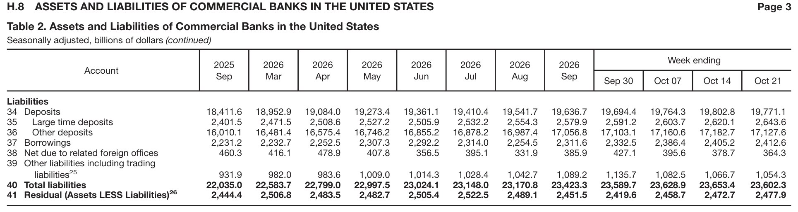

bebop
A PDF parser that reads tables with a vision model and checks every cell against the page.
Before: the PDF page

After: bebop's output
| Account | 2025 Sep | 2026 Mar | 2026 Apr | 2026 May | 2026 Jun | 2026 Jul | 2026 Aug | 2026 Sep | Week ending Sep 30 | Oct 07 | Oct 14 | Oct 21 |
|---|---|---|---|---|---|---|---|---|---|---|---|---|
| Liabilities | ||||||||||||
| 34 Deposits | 18,411.6 | 18,952.9 | 19,084.0 | 19,273.4 | 19,361.1 | 19,410.4 | 19,541.7 | 19,636.7 | 19,694.4 | 19,764.3 | 19,802.8 | 19,771.1 |
| 35 Large time deposits | 2,401.5 | 2,471.5 | 2,508.6 | 2,527.2 | 2,505.9 | 2,532.2 | 2,554.3 | 2,579.9 | 2,591.2 | 2,603.7 | 2,620.1 | 2,643.6 |
| 36 Other deposits | 16,010.1 | 16,481.4 | 16,575.4 | 16,746.2 | 16,855.2 | 16,878.2 | 16,987.4 | 17,056.8 | 17,103.1 | 17,160.6 | 17,182.7 | 17,127.6 |
| 37 Borrowings | 2,231.2 | 2,232.7 | 2,252.5 | 2,307.3 | 2,292.2 | 2,314.0 | 2,254.5 | 2,311.6 | 2,332.5 | 2,386.4 | 2,405.2 | 2,412.6 |
| 38 Net due to related foreign offices | 460.3 | 416.1 | 478.9 | 407.8 | 356.5 | 395.1 | 331.9 | 385.9 | 427.1 | 395.6 | 378.7 | 364.3 |
| 39 Other liabilities including trading liabilities25 | 931.9 | 982.0 | 983.6 | 1,009.0 | 1,014.3 | 1,028.4 | 1,042.7 | 1,089.2 | 1,135.7 | 1,082.5 | 1,066.7 | 1,054.3 |
| 40 Total liabilities | 22,035.0 | 22,583.7 | 22,799.0 | 22,997.5 | 23,024.1 | 23,148.0 | 23,170.8 | 23,423.3 | 23,589.7 | 23,628.9 | 23,653.4 | 23,602.3 |
| 41 Residual (Assets LESS Liabilities)26 | 2,444.4 | 2,506.8 | 2,483.5 | 2,482.7 | 2,505.4 | 2,522.5 | 2,489.1 | 2,451.5 | 2,419.6 | 2,458.7 | 2,472.7 | 2,477.9 |
How it works
Compared with Docling
Pages 1–3 of the Federal Reserve H.8 release, scored against the PDF's own text.
| bebop | Docling | |
|---|---|---|
| Numbers found | 897 / 897 | 861 / 897 |
| Numbers in the correct row and column | 897 / 897 | 684 / 897 |
| Rows entirely correct | 68 / 68 | 33 / 68 |
| Numbers not in the PDF | 0 | 0 |
| Time, 3 pages | about 90 seconds | about 5 seconds |
Docling merged columns, which pushed later values under the wrong header:
| Row 1, Bank credit | 2021 | 2022 | 2023 | 2024 |
|---|---|---|---|---|
| On the page, and in bebop | 8.3 | 6.7 | -0.2 | 4.0 |
| Docling | 8.3 | 6.7 -0.2 | 4.0 | 5.3 |
Docling 2.148.0, default settings. Internal results from September 2026:
| bebop | Reducto | Docling | |
|---|---|---|---|
| Value recall | 100.00% | 99.98% | 97.19% |
| Association (values matched to the right headers) | 97.7% | 68.8% | 66.1% |
Our client had strict goals for data extraction from real estate PDFs. Bebop, as our pipeline's parser, had to meet these goals: no unknowingly dropped or invented data. We tried Docling and Reducto as parsers (open and closed solutions, respectively) but found that they silently dropped values and had poor association, often mixing data between headers or merging columns and rows.
I went through a few iterations of bebop, the first being a bare minimum prototype. The second was a complete rewrite and ended up being a disaster. It dropped most headers and turned prose into fake tables. I had just started "vibe coding" and had made up goals in my head on what felt right, and often blindly trusted my coding agent.
I rebuilt the third version after better understanding measurements and the lower level architecture of bebop. For example, I found that Claude was making per-instance, hardcoded patches, when I found that the root cause was bebop not being able to join tables across pages of the PDF.
I could never have built bebop without AI and it taught me numerous things, chiefly that I cannot blindly trust it without having my own thorough understanding of my code.